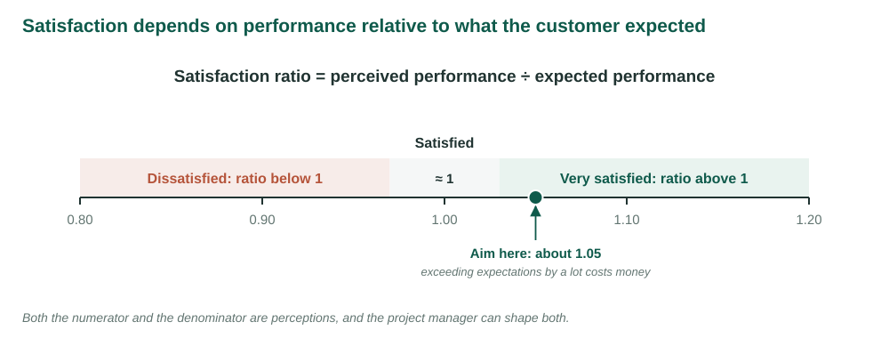
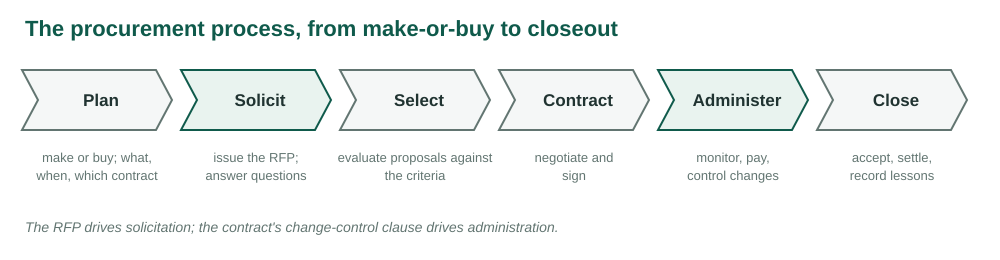
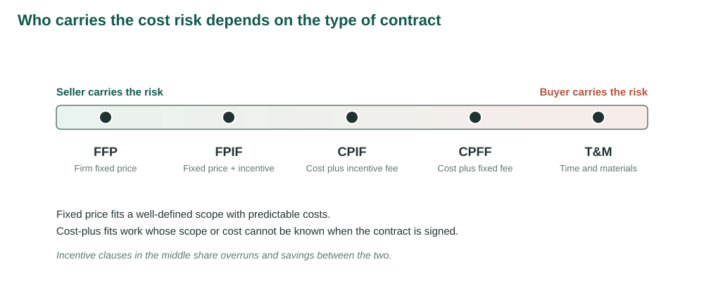

Week 14 · Outsourcing: Managing Interorganizational Relations
Recording — posts after the session.
Source. This week’s notes follow Larson & Gray, Project Management: The Managerial Process, 2024 Release, McGraw Hill, Chapter 12 [1]. The exposition is reworded. The chapter supplies the advantages and disadvantages of outsourcing, the elements of a request for proposal, the best practices list, the four principles of negotiation and the met-expectations model. The RFP outline, the best-practices list and the negotiation principles are reproduced from its Figures 12.2 and 12.4 and Table 12.2, and Figure 1 is redrawn from its Figure 12.7. The chapter’s appendix on contract management (LO A12-1 and A12-2) is not in the excerpt these notes were written from, so those sections follow the PMBOK Guide [3] and the U.S. Federal Acquisition Regulation [4], cited as such. The negotiation section draws on Fisher, Ury and Patton [2] directly. The conference’s streaming contract, the in-class activity, the case and the practice problems are original to these course materials.
Learning objectives
| LO 12-1 | Understand the advantages and disadvantages of outsourcing project work. |
| LO 12-2 | Describe the basic elements of a Request for Proposal (RFP). |
| LO 12-3 | Identify best practices for outsourcing project work. |
| LO 12-4 | Practice principled negotiation. |
| LO 12-5 | Describe the met-expectations model of customer satisfaction and its implications for working with customers on projects. |
| LO A12-1 | Describe the procurement management process. |
| LO A12-2 | Describe the differences between fixed-price and cost-plus contracts and their advantages and disadvantages. |
Concepts introduced
outsourcingmake or buyrequest for proposal (RFP)statement of work (SOW)evaluation criteriapartneringprincipled negotiationinterests vs positionsBATNAobjective criteriamet-expectations modelprocurement processfirm fixed pricefixed price incentive feecost plus fixed feecost plus incentive feeshare ratiotime and materialscontract change control
The conference has been relying on outside firms all along. The venue was contracted in Week 11, and the attendee app went to a development firm on a fixed price in Week 12. The caterer, the AV crew and the hybrid streaming are all bought in. Most projects are like this: much of the work is done by organizations the project manager does not run, under contracts somebody else may have written. This week covers how to buy that work, how to write the contract, and how to work with the people on the other side of it.
LO 12-1 · Why outsource, and what it costs
Following Larson & Gray, Ch. 12 [1].
Outsourcing means contracting out work the organization could otherwise do itself. On projects it ranges from one specialist task, such as a backhoe operator for an afternoon, to the whole project with the owner only coordinating. The chapter lists four advantages [1]:
- Lower cost. Competition between suppliers keeps prices down, offshore labour can be cheaper, and the company no longer carries the overhead of keeping the capability in-house.
- Faster completion. The same budget buys more people, and contractors bring equipment that speeds the work. A hired backhoe does in hours what a landscaping crew would take days to do by hand.
- Expertise. The company concentrates on its core competencies and hires the know-how for the rest, often getting better quality than it could produce itself.
- Flexibility. The company is no longer limited to its own resources, and a small firm can work globally by teaming with partners abroad.
The disadvantages, the chapter notes, are less often written down [1]:
- Coordination breakdowns. Professionals from different organizations, often in different buildings, cities or countries, find close mutual adjustment hard.
- Loss of control. The core team depends on organizations it has no authority over. The semiconductor shortage during the COVID-19 pandemic halted projects that had nothing to do with chips except that they needed some.
- Conflict. Participants do not share values, priorities or culture, and trust is hard to build across organizational lines with limited contact.
- Security. Trade secrets can leak, especially to a contractor who also works for a competitor. Confidential data such as payroll, medical and insurance records needs special care.
- Political sensitivity. Offshoring is blamed for job losses at home, and firms are criticized for the labour practices of their suppliers.
Every advantage on the first list is about the work. Every disadvantage on the second is about the relationship. The rest of the chapter is largely about managing the second list.
LO 12-2 · The request for proposal
Following Larson & Gray, Ch. 12 [1].
Once the decision to buy is made, the buyer tells potential suppliers what it wants in a request for proposal (RFP). The chapter’s outline has nine parts [1]:
| Element | What it settles | |
|---|---|---|
| 1 | Summary of needs and request for action | The background and a plain description of the final deliverable |
| 2 | Statement of work (SOW) | The scope and major deliverables, with a date and a cost ceiling |
| 3 | Deliverable specifications, requirements, features and tasks | Detailed enough that proposals can be checked against them and the work later controlled against them |
| 4 | Responsibilities: vendor and customer | Who pays for what, what is excluded, how the two communicate, how issues escalate, how progress is judged |
| 5 | Project schedule | A firm schedule that can be used for control: what, who and when |
| 6 | Costs and payment schedule | How costs are determined and when progress payments are made |
| 7 | Type of contract | Fixed price or cost-plus, and any incentives or penalties |
| 8 | Experience and staffing | The skills required, and assurance that the named people will be available |
| 9 | Evaluation criteria | How proposals will be judged, for example on method, price, schedule and experience, and whether those are weighted |
Two points deserve emphasis. The responsibilities element is where trouble most often starts. Leaving out who supplies the test equipment, or who pays for the contractor’s on-site office, is a classic source of disputes once work is under way [1]. The specifications do double duty: they are how proposals are compared, and later the yardstick the work is measured against. A vague RFP produces proposals that cannot be compared and a contract that cannot be enforced.
The chapter’s two examples show the range. A navy RFP for a fast near-shore warship sets performance targets: at least 55 knots, 80 to 250 feet long, radar-absorbing panels. A market research RFP is a short SOW: design, data collection, analysis and recommendations by a fixed date, for no more than $300,000 [1].
LO 12-3 · Best practices
Following Larson & Gray, Ch. 12 [1].
Firms that outsource well share a set of practices [1]:
- Well-defined requirements and procedures.
- Extensive training and team-building activities.
- Well-established conflict management processes in place.
- Frequent review and status updates.
- Co-location when needed.
- Fair and incentive-laden contracts.
- Long-term outsourcing relationships.
: Best practices in outsourcing project work, as listed in Larson & Gray, Ch. 12, Figure 12.4 [1].
The theme running through the list is partnership: owner and contractor working toward a shared goal, not master and servant, buyer and seller [1]. Read the list against the disadvantages under LO 12-1 and each practice answers one of them. Clear requirements and frequent reviews answer coordination breakdowns. Joint training, team building and co-location answer the trust problem. An agreed process for escalating disagreements answers conflict. A fair contract with incentives aligns the two firms’ interests, and a long-term relationship gives both sides a reason to protect the next job by behaving well on this one.
The word fair matters. A contract that loads all the risk onto one side invites that side to protect itself at the project’s expense, which is this week’s case.
LO 12-4 · Principled negotiation
Following Larson & Gray, Ch. 12 [1], who take the four principles from Fisher, Ury and Patton [2].
Projects are negotiated constantly: over scope with the customer, over resources with functional managers, and over price, changes and claims with contractors. Week 13’s influence currencies are one side of this. The other is how to conduct the negotiation itself. Treating it as a contest, where each side opens with a position and concedes as little as possible, damages the relationship the project still depends on tomorrow. Principled negotiation, developed at the Harvard Negotiation Project, has four principles [1, 2]:
- Separate the people from the problem. Attack the problem, not the person across the table. Emotions, perceptions and communication are real, so deal with them directly and don’t let them become the issue.
- Focus on interests, not positions. A position is what someone says they want; an interest is why they want it. Two positions can be incompatible while the interests behind them are not.
- Invent options for mutual gain. Generate possibilities before judging them, and look for options that give each side more of what it cares about.
- When possible, use objective criteria. Settle on standards neither side controls, such as market rates, the contract’s own terms, test results or an expert’s opinion, so neither side has to give in to the other’s will.
: The four principles. Reproduced from Larson & Gray, Ch. 12, Table 12.2 [1].
Fisher and colleagues add the idea of a BATNA, your best alternative to a negotiated agreement [2]. Know what you will do if the talks fail. It tells you when to walk away, and improving it is often the strongest move available. A venue that knows you have a signed backup room negotiates differently from one that knows you don’t.
A small example from the conference. The venue’s position is “AV hook-up in the main hall is $2,500 extra”. The coordinator’s position is “the contract includes AV”. Behind them, the venue’s interest is that its technician has to be paid for a Saturday, and the coordinator’s interest is that the stream works and the budget holds. Options open up: the conference’s own AV firm does the hook-up under the venue technician’s eye for two hours. The objective criterion is the contract itself, read together: what does its AV clause actually say?
LO 12-5 · Customer satisfaction: the met-expectations model
Following Larson & Gray, Ch. 12 [1].
The chapter’s starting point is that a project succeeds when its customer is satisfied, not merely when it is on time, on budget and to specification. Dissatisfaction also spreads: for each satisfied customer who tells one person, a dissatisfied customer tells about eight [1].
The chapter’s model of satisfaction is a ratio [1]:
\[\text{satisfaction} = \frac{\text{perceived performance}}{\text{expected performance}}\]
Below 1 the customer is dissatisfied; around 1, satisfied; above 1, very satisfied or delighted.

Three consequences follow [1]:
- Aim for slightly above 1, not far above. Exceeding expectations costs money: finishing two weeks early means overtime, and beating a reliability requirement by a wide margin means more design and testing. Other things being equal, a ratio near 1.05 is more profitable than 1.5.
- Both terms are perceptions. A project finished early and under budget can still leave a customer dissatisfied if they think the work is poor and their concerns were ignored. A project that ran late and over budget can leave them very satisfied if they believe the team protected their interests and did its best in hard circumstances.
- Manage expectations from the start, and keep managing them. Explaining an overrun after the fact is the weakest position. Shape realistic expectations early, keep the customer’s view of actual performance accurate as the work goes, and help them understand enough to judge the project fairly.
LO A12-1 · The procurement process
The chapter covers this in its Appendix 12.1, which is not in the excerpt. This section follows the PMBOK Guide [3].
Buying project work is itself a small project with a life cycle:

- Plan. Decide make or buy for each part of the work. Decide what to buy, when, by what kind of solicitation, and on what type of contract.
- Solicit. Issue the RFP (LO 12-2), answer bidders’ questions so all of them hear the same answers, and receive proposals.
- Select. Score the proposals against the evaluation criteria the RFP announced, and check references and the staff each bidder named.
- Contract. Negotiate the final terms and sign.
- Administer. Monitor the seller’s performance against the SOW and schedule, approve payments, and run contract change control. Any change to scope, price or date goes through the contract’s change procedure, in writing, before the work is done. Unrecorded changes are where most contract disputes come from.
- Close. Confirm the deliverables were accepted, settle claims and final payment, and record lessons for the next purchase.
PMBOK groups these as plan, conduct and control procurements [3]. Whatever the labels, the work runs from a make-or-buy decision to a formal closeout.
LO A12-2 · Fixed-price and cost-plus contracts
The chapter introduces the two families in its RFP discussion [1] and develops them in Appendix 12.1, which is not in the excerpt. The types and formulas here follow the PMBOK Guide [3] and the Federal Acquisition Regulation, Part 16 [4].
There are two families of contract, and they differ in who carries the risk that the work costs more than expected [1].
Fixed-price contracts agree a price in advance, and it stands as long as the scope does not change. They suit well-defined work with predictable costs. The seller carries the cost risk: every dollar of overrun comes out of its profit, so it has to estimate carefully and will price in a contingency [1].
Cost-plus contracts reimburse the seller’s allowable costs and add a fee. They suit work whose scope or cost cannot be known when the contract is signed: research, development, or an untested site. The buyer carries the cost risk and has to monitor costs closely [1].

| Type | The seller is paid | Fits when | Watch out for |
|---|---|---|---|
| Firm fixed price (FFP) | The agreed price | Scope is clear, costs predictable | Contingency in the price; corner-cutting when the seller is losing money; disputes over what counts as a change |
| Fixed price incentive fee (FPIF) | Target cost + target profit, adjusted by a share of the under- or overrun, up to a ceiling price | Fairly clear scope, some cost uncertainty | Setting realistic targets and ceiling |
| Cost plus fixed fee (CPFF) | Actual allowable cost + a fee fixed in dollars | Scope or cost genuinely uncertain | No reason for the seller to control cost |
| Cost plus incentive fee (CPIF) | Actual cost + a fee that rises when cost comes in under target and falls when it comes in over, between a minimum and a maximum | Uncertain, but a target can be set | Negotiating the target cost and the share |
| Time and materials (T&M) | Hourly rates for labour + materials at cost | Small or open-ended jobs, staff augmentation | Open-ended cost; set a not-to-exceed ceiling |
One variant is missing from the table on purpose. Cost plus a percentage of cost pays a fee that grows with the seller’s spending, so the seller earns more by spending more. U.S. federal contracting prohibits it for that reason [4]. The chapter’s own description of cost-plus, a fee “usually” set as a percentage of total cost [1], describes exactly this risk.
How an incentive fee works
An incentive contract sets a target cost and a target fee, and a share ratio that splits any difference between target and actual cost, written buyer/seller [3]. With a seller share s:
\[\text{fee} = \text{target fee} + s \times (\text{target cost} - \text{actual cost})\]
bounded by a minimum and a maximum fee. The buyer pays actual cost plus the fee. At an 80/20 share, every $1,000 the seller saves earns it $200 more fee, and every $1,000 it overruns costs it $200. The seller keeps a stake in the cost without bearing all of it.
A fixed price incentive works the same way on profit, but the buyer’s total is capped at the ceiling price. Above the ceiling, every extra dollar comes out of the seller’s profit, as under a firm fixed price [3].
In class: choose the contract
The conference still has three purchases to make. Work in pairs on Tuesday: Part A on paper, Part B by hand and then in Smartsheet, where you build the bid comparison and a dashboard that shows who carries the risk.
Part A · Which contract? For each purchase, choose a contract type from the table above and give the reason in one sentence:
- Lunch for 400 attendees on both days, from a fixed menu, with numbers confirmed a week ahead.
- Hybrid streaming of the main hall, in a venue whose network nobody has tested. A site survey next week will settle what equipment is needed.
- An on-call AV technician for the two conference days. Nobody knows how many hours will be needed.
Part B · Price the streaming bids. Three firms bid for the streaming:
- Bid 1, firm fixed price: $45,000.
- Bid 2, cost plus fixed fee: actual cost plus a fee of $4,000.
- Bid 3, cost plus incentive fee: target cost $40,000, target fee $4,000, share 80/20 (buyer/seller), minimum fee $1,000, maximum fee $6,000.
Before opening Smartsheet, work one row by hand: at an actual cost of $46,000, what does the conference pay under each bid, and what does each seller earn?
Build it in Smartsheet
The streaming bids file holds 31 scenarios, actual costs from $30,000 to $60,000 in steps of $1,000, and the seven columns you will fill with formulas, still empty. The four rows you will report on are marked Part B in the Question column.
Import. + Create → Import → Microsoft Excel, select the file, keep row 1 as headers and Scenario as the primary column. Check: 31 rows, $30k to $60k, and ten columns: Scenario, Actual cost, Question, then seven empty columns from FFP pays to Cheapest bid.
Formula columns. The seven empty columns are waiting for their formulas. In row 1 of each, paste the formula below, then right-click the cell → Convert to Column Formula, and the whole column fills. Format the money columns as currency with the $ button in the toolbar.
Column Formula FFP pays =45000FFP profit =[FFP pays]@row - [Actual cost]@rowCPFF pays =[Actual cost]@row + 4000CPFF fee =[CPFF pays]@row - [Actual cost]@rowCPIF fee =MIN(6000, MAX(1000, 4000 + 0.2 * (40000 - [Actual cost]@row)))CPIF pays =[Actual cost]@row + [CPIF fee]@rowCheapest bid =IF(AND([CPIF pays]@row <= [FFP pays]@row, [CPIF pays]@row <= [CPFF pays]@row), "CPIF", IF([FFP pays]@row < [CPFF pays]@row, "FFP", "CPFF"))Check: on the $46k row, CPIF fee reads $2,800. If it does not, compare your formula with the table before going on.
Sheet Summary. Open the Sheet Summary panel (the icon on the right rail) and add four Text/Number fields:
Field Formula Fixed price cheapest from =MIN(COLLECT([Actual cost]:[Actual cost], [Cheapest bid]:[Cheapest bid], "FFP"))Rows FFP cheapest =COUNTIF([Cheapest bid]:[Cheapest bid], "FFP")Rows CPIF cheapest =COUNTIF([Cheapest bid]:[Cheapest bid], "CPIF")Rows CPFF cheapest =COUNTIF([Cheapest bid]:[Cheapest bid], "CPFF")Dashboard. + Create → Dashboard, name it Streaming bids, and open it in edit mode.
- Add a Chart widget. Source: your sheet; select the Scenario, FFP pays, CPFF pays and CPIF pays columns for all 31 rows. Choose a line chart and title it What the conference pays.
- Add a second Chart widget with Scenario, FFP profit, CPFF fee and CPIF fee, also a line chart, titled What the seller earns.
- Add a Metric widget whose source is the Sheet Summary, showing the four fields.
- Save.
Filter. Back in the sheet, filter Question is Part B to see just the four rows you report.
Then answer, from the sheet and the dashboard:
- For actual costs of $36,000, $40,000, $46,000 and $55,000, what does the conference pay under each bid, and what does each seller earn?
- On the first chart, where does the CPIF line cross the fixed price? The summary field gives the first $1,000 step where the fixed price is cheapest; work out the exact crossing point from the fee formula.
- Below what actual cost does Bid 3’s fee hit its maximum, and above what actual cost does it hit its minimum? Find both on the second chart.
- Read the Cheapest bid column. Which bid is cheapest when costs come in low, and which when they come in high? The conference has to sign before anyone knows the cost: which bid would you sign, and why?
- Under which bid does the seller have no financial reason to keep costs down? Under which does it have the strongest reason to skip work that was promised but is hard to verify? Point to the line on the second chart that tells you.
The incentive that produced the wrong behaviour
The sponsor’s purchasing office did not wait for the class’s advice. It signed the AV and streaming contract at cost plus 15 percent of cost, “so the firm is covered for whatever the venue turns out to need”. To make sure installation was done in time, it added a bonus of $500 for each day before Mon 30 Nov that the installation is signed off. The statement of work requires a full-load streaming test with 500 simulated viewers before sign-off.
The firm signed off installation on Tue 24 Nov, six days early, and claimed $3,000. Its invoice shows $52,000 of cost, including a second camera package and a rented generator nobody asked for, plus a $7,800 fee. The coordinator had budgeted $45,000. At the rehearsal on Thu 3 Dec, the stream dropped twice with fewer than 250 viewers connected. The full-load test had been “deferred to after the rehearsal”. The sponsor asks the coordinator what went wrong, and whether the stream will hold for 500 people on the day.
Which clause rewarded which behaviour? Rewrite the contract, type, fee and incentive, so that what the firm is paid for is what the conference needs. The coordinator now has to negotiate with the firm before the conference. Using principled negotiation, what are each side’s interests, what objective criteria apply, and what is the coordinator’s BATNA? Finally, what does the sponsor now expect of the stream, and how should the coordinator manage that expectation between now and the day?
Kerr named this failure decades ago: organizations routinely reward one behaviour while hoping for another [5]. A contract is a reward system for a firm, and it gets the behaviour it pays for.
Practice problems
These are written for this course; the chapter’s own review questions and exercises are in your copy of the text.
- A fixed price incentive contract has target cost $100,000, target profit $10,000, ceiling price $120,000 and a 70/30 share (buyer/seller). What does the buyer pay, and what does the seller earn, if actual cost is $90,000, $110,000 and $125,000?
- A customer rates performance on a 10-point scale. Before the project they expected an 8; at handover they perceive a 7.6. What is the satisfaction ratio? Name two legitimate ways the project manager could have produced a ratio of about 1.05, one acting on each term.
- The conference’s draft RFP for catering reads in full: “Lunch for 400 on both days, buffet, vegetarian options, by 12:00. Fixed price. Proposals due Fri 4 Dec.” Which of the nine RFP elements are missing, and which missing element is most likely to cause a dispute?
- A functional manager’s position is “none of my engineers can go to your project before March”. Write two interests that might lie behind that position, and one option for mutual gain for each.
- For each, say whether you would outsource it and why, using the advantages and disadvantages under LO 12-1: (a) the conference’s registration website; (b) security staff for the conference days; (c) the program committee’s selection of papers.
Sources
- Larson, E. W., & Gray, C. F. Project Management: The Managerial Process, 2024 Release. McGraw Hill. Chapter 12.
- Fisher, R., Ury, W., & Patton, B. (2011). Getting to Yes: Negotiating Agreement Without Giving In (3rd ed.). Penguin.
- Project Management Institute. (2017). A Guide to the Project Management Body of Knowledge (PMBOK Guide) (6th ed.). Chapter 12, Project Procurement Management.
- Federal Acquisition Regulation, 48 C.F.R. Part 16, Types of Contracts; §16.102(c) on cost-plus-a-percentage-of-cost. https://www.acquisition.gov/far/part-16
- Kerr, S. (1975). On the folly of rewarding A, while hoping for B. Academy of Management Journal, 18(4), 769–783.
The conference’s streaming contract and bids, the in-class activity, the case and the practice problems are original to these course materials.